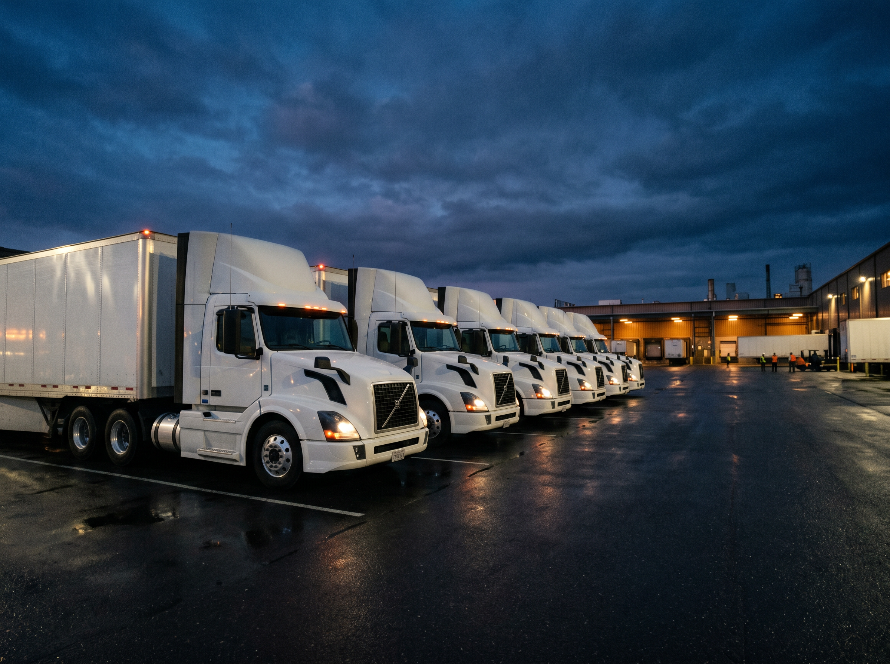

Scheduled Delivery
Tell us when your goods need to arrive and we build the schedule around it. Predictable, planned freight for shippers who run on tight windows.
Learn more ->Service with Integrity - Since 2007
Daats Companies is a full-service trucking carrier out of Dallas, Texas - dry-van and refrigerated freight delivered safely and on time, from local runs to nationwide over-the-road.
Operating since
Miles driven in 2024
States served (lower 48)
On-time delivery rate
From a single local run to coast-to-coast over-the-road freight, Daats covers it - dry-van and refrigerated, on your schedule.
Tell us when your goods need to arrive and we build the schedule around it. Predictable, planned freight for shippers who run on tight windows.
Learn more ->Scheduled or on-demand regional hauls across Texas and the surrounding region, tailored to your lanes and volume.
Learn more ->Long-haul over-the-road freight to all 48 contiguous states, moved by professional drivers and tracked the whole way.
Learn more ->Straightforward local delivery with custom-tailored solutions to get your goods where they need to be, on time.
Learn more ->When a load cannot wait, our rush service prioritizes pickup and delivery so it gets there quickly and intact.
Learn more ->Reliable same-day service for urgent shipments, with delivery guaranteed to arrive on schedule.
Learn more ->Over 19 years of moving freight has taught us what shippers actually need: equipment that fits the load, drivers who show up, and a team that does what it says.
Not a slogan - the standard we hold every load and every driver to, on every mile.
A modern fleet built to move both dry and temperature-controlled freight with care.
One carrier for local, regional, and over-the-road lanes across the continental U.S.
Active interstate operating authority with a satisfactory safety rating.
Whether your freight rides dry or cold, Daats runs the right equipment and the drivers to handle it - kept road-ready and compliant so your shipment arrives the way it left.

One carrier across every distance - pickup down the street or a load that crosses the country. Headquartered in Dallas, Texas, running coast to coast.
Dallas-Fort Worth metroplex and same-day metro moves.
Learn more ->Texas and surrounding states, scheduled or on-demand.
Learn more ->Over-the-road service to all 48 contiguous states.
Learn more ->We haul across a range of industries, with equipment and handling matched to the load.
Reliable replenishment freight that keeps shelves and distribution centers stocked.
Learn more ->Temperature-controlled hauling for fresh produce and perishable goods.
Learn more ->On-time parts movement that keeps assembly and service operations running.
Learn more ->High-volume dry-van freight for paper products and packaging materials.
Learn more ->Dependable transport for construction and building-supply shipments.
Learn more ->Careful handling for medical and mixed general-freight loads.
Learn more ->We back Service with Integrity with authority and a safety record that's a matter of public record - not marketing claims.
Active interstate authority for property transportation.
Learn more ->Satisfactory safety rating on record with the FMCSA.
Learn more ->Authorized for-hire interstate transportation of property.
Learn more ->In business since 2007 - over 19 years moving freight.
Learn more ->Current U.S. on-highway diesel pricing from the latest EIA release.
| Region | 08/17/26 | 08/24/26 | 08/31/26 | Week Ago | Year Ago |
|---|---|---|---|---|---|
| U.S. | 5.454 | 5.652 | 5.599 | -0.053 | 1.865 |
| East Coast (PADD1) | 5.340 | 5.498 | 5.448 | -0.050 | 1.698 |
| New England (PADD1A) | 5.545 | 5.716 | 5.736 | 0.020 | 1.788 |
| Central Atlantic (PADD1B) | 5.652 | 5.840 | 5.838 | -0.002 | 1.926 |
| Lower Atlantic (PADD1C) | 5.204 | 5.350 | 5.276 | -0.074 | 1.607 |
| Midwest (PADD2) | 5.435 | 5.636 | 5.571 | -0.065 | 1.849 |
| Gulf Coast (PADD3) | 5.237 | 5.481 | 5.360 | -0.121 | 1.993 |
| Rocky Mountain (PADD4) | 5.427 | 5.537 | 5.555 | 0.018 | 1.802 |
| West Coast (PADD5) | 6.203 | 6.407 | 6.497 | 0.090 | 2.013 |
| West Coast less California | 5.699 | 5.859 | 5.872 | 0.013 | 1.760 |
| California | 6.785 | 7.040 | 7.218 | 0.178 | 2.304 |
Practical freight and logistics guidance for shippers - from choosing equipment to planning lanes across the lower 48.

Late August is when disciplined freight teams tighten forecasts, lock in capacity, and fix the small communication gaps that become expensive once fall shipping pressure starts building.

Artificial intelligence has crossed from promise to proof in freight. Here's where it is actually delivering value in 2026 - and where the human behind the wheel still matters most.

A geopolitics-driven fuel spike pushed U.S. diesel to record levels in 2026 and rippled straight into freight rates. Here's what's happening and how to keep your transportation budget under control.

A 2026 Supreme Court decision reshaped how freight brokers and the shippers behind them vet carriers. Here's what changed and why a verifiable safety record now matters more than ever.
Tell us your lanes, your timing, and what you're shipping. We'll get you a straight answer fast.